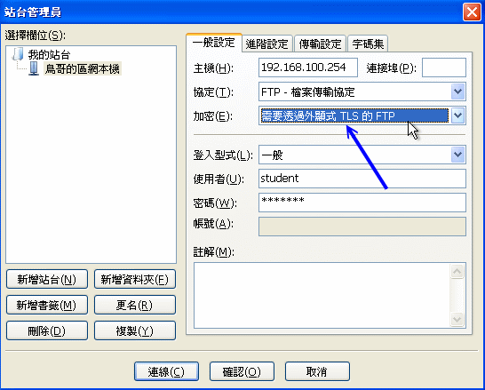
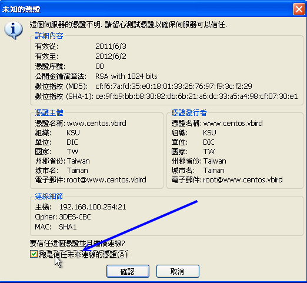

既然 http 都有 https 了，那么使用明码传输的 ftp 有没有加密的 ftps 呢？嘿嘿！说的好！有的啦～既然都有 openssl 这个加密函式库，
我们当然能够使用类似的机制来处理 FTP 啰！但前提之下是你的 vsftpd 有支持 SSL 函式库才行！此外，我们也必须要建立 SSL
的凭证档给 vsftpd 使用，这样才能够进行加密嘛！了解乎！接下来，就让我们一步一步的进行 ftps 的服务器建置吧！
1. 检查 vsftpd 有无支持 ssl 模块：
如果你的 vsftpd 当初编译的时候没有支持 SSL 模块，那么你就得只好自己重新编译一个 vsftpd 的软件了！我们的 CentOS 有支持吗？
赶紧来瞧瞧：
[root@www ~]# ldd $(which vsftpd) | grep ssl
libssl.so.10 => /usr/lib64/libssl.so.10 (0x00007f0587879000)
|
如果有出现 libssl.so 的字样，就是有支持！这样才能够继续下一步呦！
CentOS 给我们一个建立凭证的地方，那就是 /etc/pki/tls/certs/ 这个目录！详细的说明我们在
20.5.2 里面谈过咯，所以这里只介绍怎么做：
[root@www ~]# cd /etc/pki/tls/certs
[root@www certs]# make vsftpd.pem
----- ....(前面省略)....
Country Name (2 letter code) [XX]:TW
State or Province Name (full name) []:Taiwan
Locality Name (eg, city) [Default City]:Tainan
Organization Name (eg, company) [Default Company Ltd]:KSU
Organizational Unit Name (eg, section) []:DIC
Common Name (eg, your name or your server's hostname) []:www.centos.vbird
Email Address []:root@www.centos.vbird
[root@www certs]# cp -a vsftpd.pem /etc/vsftpd/
[root@www certs]# ll /etc/vsftpd/vsftpd.pem
-rw-------. 1 root root 3116 2011-08-08 16:52 /etc/vsftpd/vsftpd.pem
# 要注意一下权限喔！
|
3. 修改 vsftpd.conf 的配置文件，假定有实体、匿名账号：
在前面 21.2 里面大多是单纯匿名或单纯实体帐户，这里我们将实体账号透过 SSL 联机，但匿名者使用明码传输！
两者同时提供给客户端使用啦！FTP 的设定项目主要是这样：
- 提供实体账号登入，实体账号可上传数据，且 umask 为 002
- 实体账号默认为 chroot 的情况，且全部实体账号可用带宽为 1Mbytes/second
- 实体账号的登入与数据传输均需透过 SSL 加密功能传送；
- 提供匿名登录，匿名者仅能下载，不能上传，且使用明码传输 (不透过 SSL)
此时，整体的设定值会有点像这样：
[root@www ~]# vim /etc/vsftpd/vsftpd.conf
# 实体账号的一般设定项目：
local_enable=YES
write_enable=YES
local_umask=002
chroot_local_user=YES
chroot_list_enable=YES
chroot_list_file=/etc/vsftpd/chroot_list
local_max_rate=10000000
# 匿名者的一般设定：
anonymous_enable=YES
no_anon_password=YES
anon_max_rate=1000000
data_connection_timeout=60
idle_session_timeout=600
# 针对 SSL 所加入的特别参数！每个项目都很重要！
ssl_enable=YES <==启动 SSL 的支持
allow_anon_ssl=NO <==但是不允许匿名者使用 SSL 喔！
force_local_data_ssl=YES <==强制实体用户数据传输加密
force_local_logins_ssl=YES <==同上，但连登入时的帐密也加密
ssl_tlsv1=YES <==支持 TLS 方式即可，底下不用启动
ssl_sslv2=NO
ssl_sslv3=NO
rsa_cert_file=/etc/vsftpd/vsftpd.pem <==预设 RSA 加密的凭证档案所在
# 一般服务器系统设定的项目：
max_clients=50
max_per_ip=5
use_localtime=YES
dirmessage_enable=YES
xferlog_enable=YES
connect_from_port_20=YES
xferlog_std_format=YES
listen=YES
pam_service_name=vsftpd
tcp_wrappers=YES
banner_file=/etc/vsftpd/welcome.txt
dual_log_enable=YES
vsftpd_log_file=/var/log/vsftpd.log
pasv_min_port=65400
pasv_max_port=65410
[root@www ~]# /etc/init.d/vsftpd restart
|
4. 联机测试看看！使用 Filezilla 联机测试：
接下来我们利用 filezilla 来说明一下，如何透过 SSL/TLS 功能来进行联机加密。很简单，只要在站台管理员的地方选择：

图 21.4-1、透过 Filezilla 联机到 SSL/TLS 支持的 FTP 方式
如上图所示，重点在箭头所指的地方，需要透过 TLS 的加密方式才行！然后，鸟哥尝试使用 student 这个一般账号登入系统，
联机的时候，应该会出现如下的图示才对：

图 21.4-2、透过 Filezilla 是否接受凭证呢？
如果一切都没有问题，那么你可以点选上图那个『总是信任』的项目，如此一来，未来联机到这个地方就不会再次要你确认凭证啦！
很简单的解决了 FTP 联机加密的问题啰！^_^
|
例题：
想一想，既然有了 SFTP 可以进行加密的 FTP 传输，那为何需要 ftps 呢？
答：
因为既然要开放 SFTP 的话，就得要同时放行 sshd 亦即是 ssh 的联机，如此一来，你的 port 22 很可能会常常被侦测～若是 openssl,
openssh 出问题，恐怕你的系统就会被绑架。如果你的 FTP 真的有必要存在，那么透过 ftps 以及利用 vsftpd 这个较为安全的服务器软件来架设，
理论上，是要比 sftp 来的安全些～至少对 Internet 放行 ftps 还不会觉得很可怕...
|